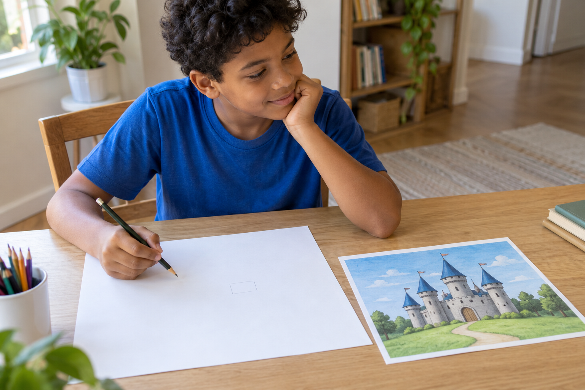
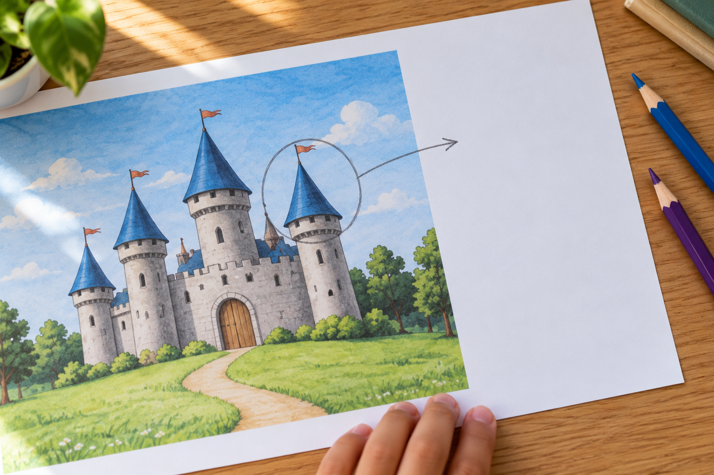
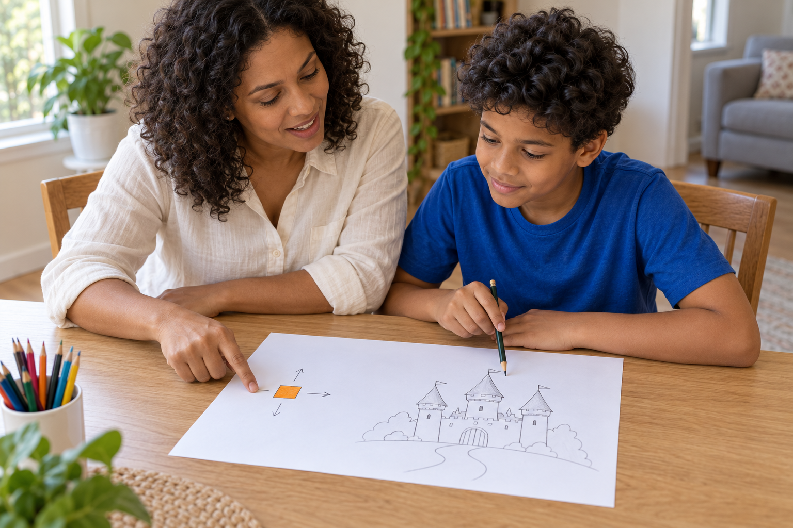
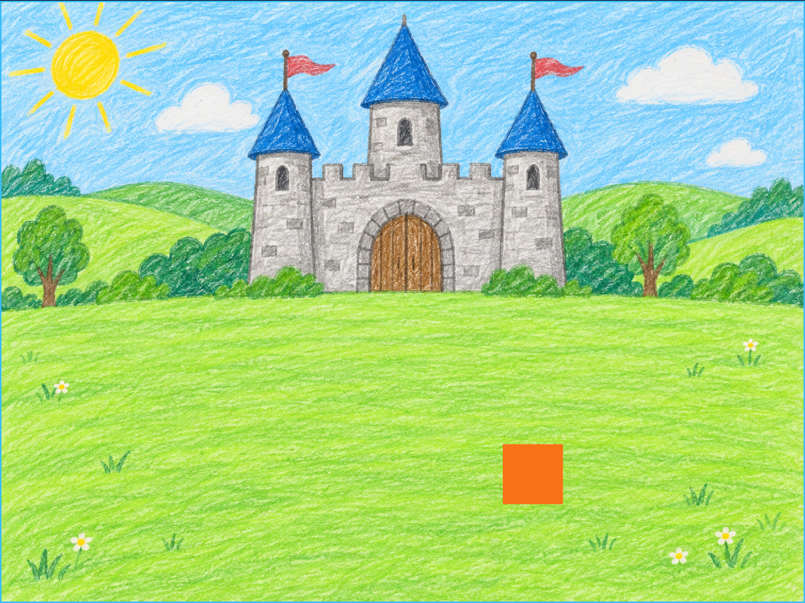
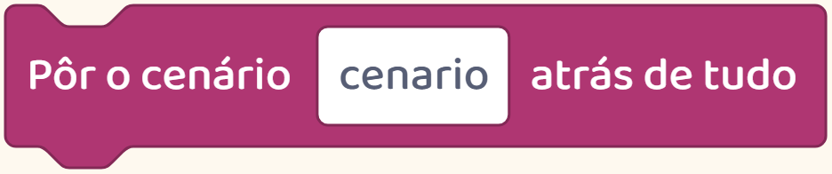
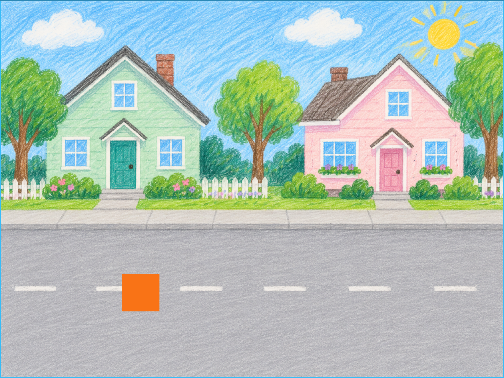
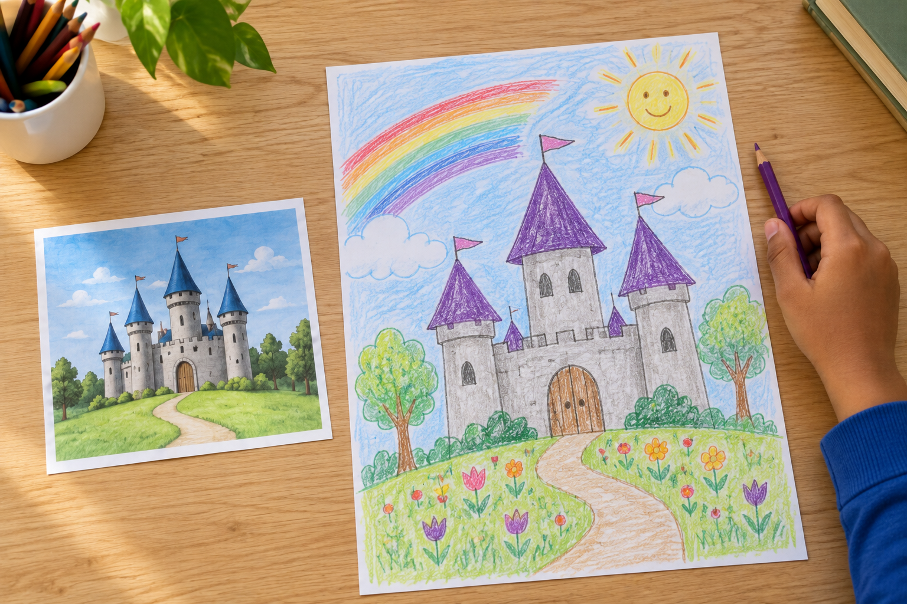

Teste em casa
Um modelo pode ajudar seu filho a começar.
As escolhas dele podem vir depois.

Um modelo pode ajudar seu filho a começar.
As escolhas dele podem vir depois.

Quem programa também usa exemplos para aprender.
Ver uma parte funcionando ajuda a entender como ela foi feita.
Depois de seguir o exemplo, a criança pode experimentar uma mudança.

O que ela gostaria de fazer de outro jeito?
Na atividade, deixem claro o que precisa seguir a orientação e o que ela pode escolher.

Por exemplo: manter o personagem andando e inventar um novo cenário.
Neste jogo que montamos, o personagem anda com as setas.

O fundo pode receber um desenho escolhido por quem está criando.
O personagem continua andando, mas agora pode passear num castelo, numa rua ou num quarto desenhado pela criança.


Ela testa como sua escolha ficou no jogo.
O exemplo ajuda a começar. Mudar e testar abre espaço para as ideias dele.

Siga @criecomhelenaejulio para ver como orientamos essas primeiras escolhas na criação de jogos.